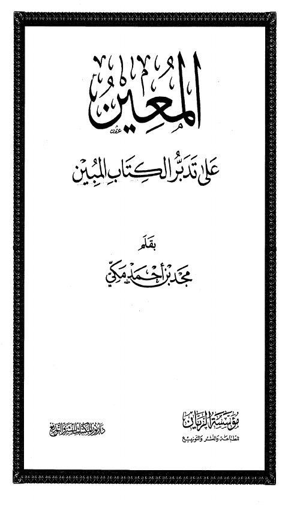
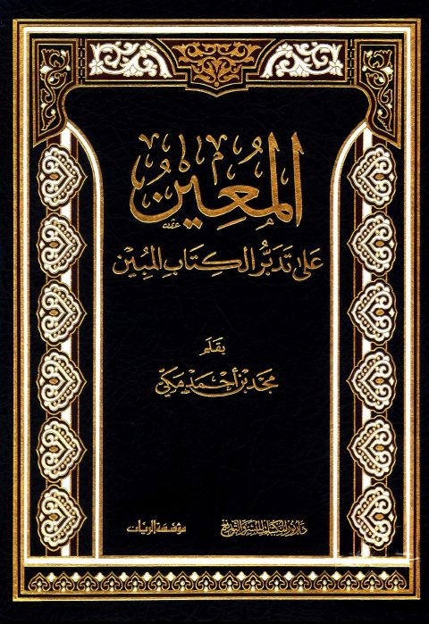

Authors
مجد بن أحمد مكي
Author
Resources

المعين على تدبر الكتاب المبين- ط 2
المعين على تدبر الكتاب المبين- ط 2
مجد بن أحمد مكي

المعين على تدبر الكتاب المبين
المعين على تدبر الكتاب المبين
مجد بن أحمد مكي